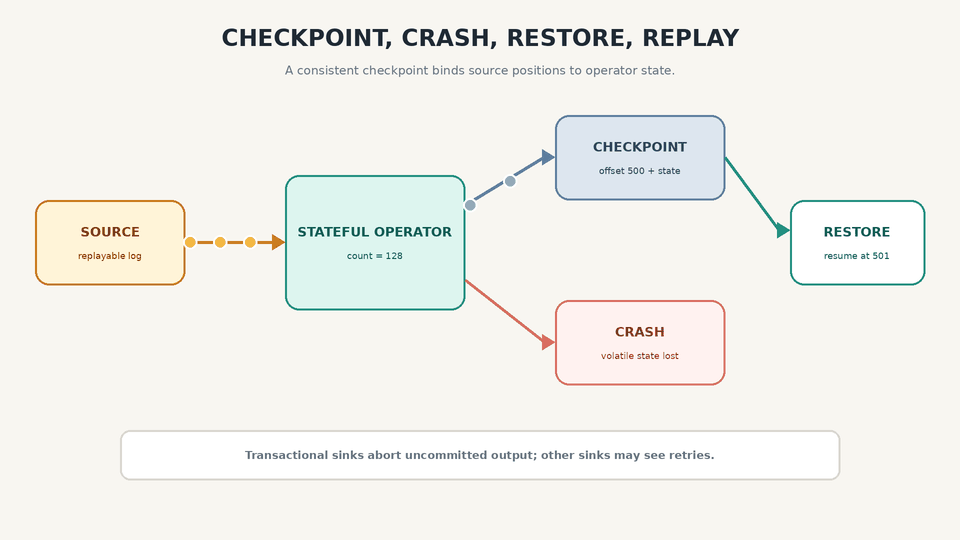
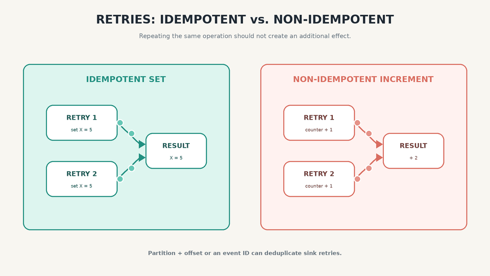
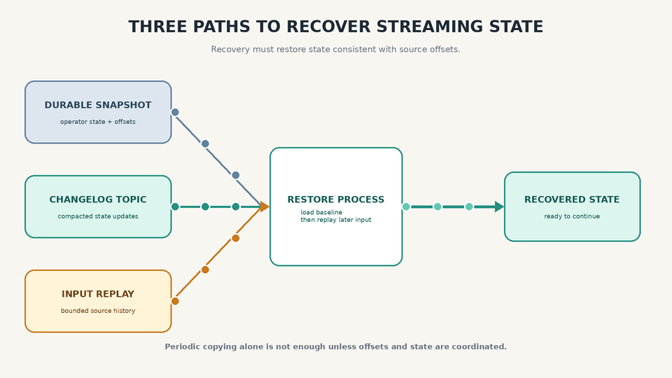

What the Stream? Phase 10
Fault Tolerance in Stream Processing
Why Fault Tolerance Is Different for Streams
Streams are unbounded and continuously growing. We cannot wait until a streaming task finishes before making all of its output visible, because the task may be designed to run forever.
Fault tolerance therefore depends on coordinated progress: input positions, operator state, and output effects must agree on what has been completed.
Microbatching and Checkpointing
One approach is to break execution into small batches and process each batch as a unit. Classic Spark Streaming and Spark Structured Streaming support configurable microbatch intervals or triggers. One second is a possible configuration, not a fixed rule.
Microbatching is an execution model. Event-time windows are a separate concept. Tumbling, hopping, sliding, and session windows may span one or more microbatches while state carries information across executions.
Apache Flink uses a continuous processing model with checkpoint barriers. A completed checkpoint captures operator state and source positions consistently. After failure, Flink restores that state and reprocesses the input that followed the checkpoint.
Transactional sinks can abort output that was staged but not committed. Nontransactional sinks may observe duplicates after replay.

Checkpointing or microbatching can support exactly-once state semantics when combined with replayable sources and consistent snapshots. End-to-end exactly-once effects also require transactional or idempotent sinks.
Atomic Commit
For each checkpoint or transaction, output can be staged and committed only after the corresponding state and input positions are durably completed.
A common approach records an atomic commit decision through a transaction coordinator or a sink-specific protocol. The input offset, state update, and output must not advance independently.
Irreversible effects such as emails and push notifications need special handling. They generally cannot be rolled back. An idempotency key, deduplication store, or transactional outbox can prevent a recovery from sending the same effect twice.
Idempotence
An operation is idempotent when repeating the same operation has no additional effect.
Setting a key to the same value more than once is idempotent. Incrementing a counter twice is not: a retry changes the result again.

An operation that is not naturally idempotent can often be deduplicated with metadata. Kafka offsets increase within each partition. A sink can store the topic, partition, and offset—or another globally unique event ID—atomically with the resulting update and ignore a retry it has already applied.
Idempotence is not the same as deterministic replay, concurrency control, or input ordering. These are separate requirements that may all matter when rebuilding equivalent state.
Rebuilding State After a Failure
Any operation that maintains state, including a windowed count or a join, must be able to recover that state consistently.
There are three common paths:
- Durable snapshot: restore a checkpoint containing operator state and source offsets.
- Changelog topic: rebuild a local state store from its compacted sequence of updates.
- Input replay: recompute state from retained source events when the required history is reasonably small.

Periodic copying alone does not prevent loss or duplication. Recovery must restore a state version consistent with the source offsets and then replay the later input.
Flink uses durable snapshots of operator state. Kafka Streams backs local state stores with changelog topics, commonly using log compaction. For a short aggregation window, replaying the source events may be fast enough to rebuild state directly.
Exactly-once is not one switch. It is a contract across replayable input, consistent state, and controlled output effects.